ME-NeuralFMU from the Modelica Conference
Tutorial by Johannes Stoljar, Tobias Thummerer
License
Copyright (c) 2021 Tobias Thummerer, Lars Mikelsons, Johannes Stoljar
Licensed under the MIT license. See LICENSE file in the project root for details.
Motivation
This Julia Package is motivated by the application of hybrid modeling. This package enables the user to integrate his simulation model between neural networks (NeuralFMU). For this, the simulation model must be exported as FMU (functional mock-up unit), which corresponds to a widely used standard. The big advantage of hybrid modeling with artificial neural networks is, that the effects that are difficult to model (because they might be unknown) can be easily learned by the neural networks. For this purpose, the NeuralFMU is trained with measurement data containing the unmodeled physical effect. The final product is a simulation model including the orignially unmodeled effects. Another big advantage of the NeuralFMU is that it works with little data, because the FMU already contains the characterisitic functionality of the simulation and only the missing effects are added.
NeuralFMUs do not need to be as easy as in this example. Basically a NeuralFMU can combine different ANN topologies that manipulate any FMU-input (system state, system inputs, time) and any FMU-output (system state derivative, system outputs, other system variables). However, for this example a NeuralFMU topology as shown in the following picture is used.

NeuralFMU (ME) from [1].
Introduction to the example
In this example, simplified modeling of a one-dimensional spring pendulum (without friction) is compared to a model of the same system that includes a nonlinear friction model. The FMU with the simplified model will be named simpleFMU in the following and the model with the friction will be named realFMU. At the beginning, the actual state of both simulations is shown, whereby clear deviations can be seen in the graphs. In addition, the initial states are changed for both models and these graphs are also contrasted, and the differences can again be clearly seen. The realFMU serves as a reference graph. The simpleFMU is then integrated into a NeuralFMU architecture and a training of the entire network is performed. After the training the final state is compared again to the realFMU. It can be clearly seen that by using the NeuralFMU, learning of the friction process has taken place.
Target group
The example is primarily intended for users who work in the field of first principle and/or hybrid modeling and are further interested in hybrid model building. The example wants to show how simple it is to combine FMUs with machine learning and to illustrate the advantages of this approach.
Other formats
Besides this Jupyter Notebook there is also a Julia file with the same name, which contains only the code cells. For the documentation there is a Markdown file corresponding to the notebook.
Getting started
Installation prerequisites
| Description | Command | Alternative | |
|---|---|---|---|
| 1. | Enter Package Manager via | ] | |
| 2. | Install FMI via | add FMI | add " https://github.com/ThummeTo/FMI.jl " |
| 3. | Install FMIFlux via | add FMIFlux | add " https://github.com/ThummeTo/FMIFlux.jl " |
| 4. | Install Flux via | add Flux | |
| 5. | Install DifferentialEquations via | add DifferentialEquations | |
| 6. | Install Plots via | add Plots |
Code section
To run the example, the previously installed packages must be included.
# imports
using FMI
using FMIFlux
using Flux
using DifferentialEquations: Tsit5
import PlotsAfter importing the packages, the path to the Functional Mock-up Units (FMUs) is set. The exported FMU is a model meeting the Functional Mock-up Interface (FMI) Standard. The FMI is a free standard (fmi-standard.org) that defines a container and an interface to exchange dynamic models using a combination of XML files, binaries and C code zipped into a single file.
The object-orientated structure of the SpringPendulum1D (simpleFMU) can be seen in the following graphic and corresponds to a simple modeling.

In contrast, the model SpringFrictionPendulum1D (realFMU) is somewhat more accurate, because it includes a friction component.

Here the path for the SpringPendulum1D and the SpringFrictionPendulum1D model is set:
simpleFMUPath = joinpath(dirname(@__FILE__), "../model/SpringPendulum1D.fmu")
realFMUPath = joinpath(dirname(@__FILE__), "../model/SpringFrictionPendulum1D.fmu")
println("SimpleFMU path: ", simpleFMUPath)
println("RealFMU path: ", realFMUPath)SimpleFMU path: ../model/SpringPendulum1D.fmu
RealFMU path: ../model/SpringFrictionPendulum1D.fmuNext, the start time and end time of the simulation are set. Finally, a step size is specified to store the results of the simulation at these time steps.
tStart = 0.0
tStep = 0.01
tStop = 4.0
tSave = collect(tStart:tStep:tStop)401-element Vector{Float64}:
0.0
0.01
0.02
0.03
0.04
0.05
0.06
0.07
0.08
0.09
0.1
0.11
0.12
⋮
3.89
3.9
3.91
3.92
3.93
3.94
3.95
3.96
3.97
3.98
3.99
4.0RealFMU
In the next lines of code the FMU of the realFMU model is loaded and instantiated.
realFMU = fmiLoad(realFMUPath)
fmiInstantiate!(realFMU; loggingOn=false)
fmiInfo(realFMU)┌ Info: fmi2Unzip(...): Successfully unzipped 28 files at `C:\Users\JOHANN~1\AppData\Local\Temp\fmijl_DBHK6a\SpringFrictionPendulum1D`.
└ @ FMI C:\Users\Johannes Stoljar\.julia\packages\FMI\l4qPg\src\FMI2.jl:273
┌ Info: fmi2Load(...): FMU supports both CS and ME, using CS as default if nothing specified.
└ @ FMI C:\Users\Johannes Stoljar\.julia\packages\FMI\l4qPg\src\FMI2.jl:376
┌ Info: fmi2Load(...): FMU resources location is `file:///C:/Users/JOHANN~1/AppData/Local/Temp/fmijl_DBHK6a/SpringFrictionPendulum1D/resources`
└ @ FMI C:\Users\Johannes Stoljar\.julia\packages\FMI\l4qPg\src\FMI2.jl:384
#################### Begin information for FMU ####################
Model name: SpringFrictionPendulum1D
FMI-Version: 2.0
GUID: {b02421b8-652a-4d48-9ffc-c2b223aa1b94}
Generation tool: Dymola Version 2020x (64-bit), 2019-10-10
Generation time: 2021-11-23T13:36:30Z
Var. naming conv.: structured
Event indicators: 24
Inputs: 0
Outputs: 0
States: 2
33554432 ["mass.s"]
33554433 ["mass.v", "mass.v_relfric"]
Supports Co-Simulation: true
Model identifier: SpringFrictionPendulum1D
Get/Set State: true
Serialize State: true
Dir. Derivatives: true
Var. com. steps: true
Input interpol.: true
Max order out. der.: 1
Supports Model-Exchange: true
Model identifier: SpringFrictionPendulum1D
Get/Set State: true
Serialize State: true
Dir. Derivatives: true
##################### End information for FMU #####################In the following two subsections, the realFMU is simulated twice with different initial states to show what effect the choice of initial states has.
Default initial states
The FMU is reset to the defined state by the function fmiReset(). Then the start and end time are set via the fmiSetupExperiment() function. In the next steps the initial states are set. The first state is the position of the mass, which is initilized with $0.5m$, the second state is the velocity, which is initialized with $0\frac{m}{s}$.
fmiReset(realFMU)
fmiSetupExperiment(realFMU, tStart, tStop)
states = ["s0", "v0"]
x₀ = [0.5, 0.0]
fmiSetReal(realFMU, states, x₀)
fmiEnterInitializationMode(realFMU)
fmiExitInitializationMode(realFMU);In the following code block the realFMU is simulated, still specifying which variables are included. After the simulation is finished the result of the realFMU can be plotted. This plot also serves as a reference for the other model (simpleFMU). The extracted data will still be needed later on.
vrs = ["mass.s", "mass.v", "mass.a", "mass.f"]
success, realSimData = fmiSimulate(realFMU, tStart, tStop; recordValues=vrs, saveat=tSave, setup=false, reset=false)
posReal = collect(data[1] for data in realSimData.saveval)
velReal = collect(data[2] for data in realSimData.saveval)
fmiPlot(realFMU, vrs, realSimData)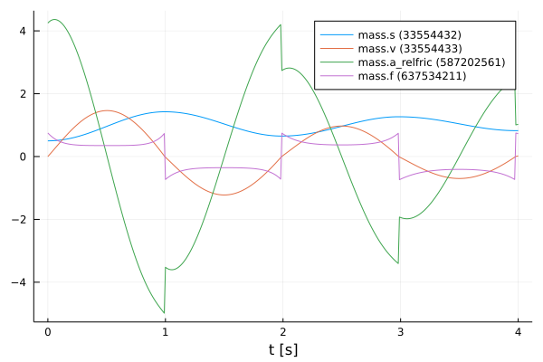
Define functions
The structure of the previous code section is used more often in the further sections, so for clarity the previously explained code sections for resetting, initializing and simulating are combined into one function simulate().
function simulate(FMU, states, x₀, variables, tStart, tStop, tSave)
fmiReset(FMU)
fmiSetupExperiment(FMU, tStart, tStop)
fmiSetReal(FMU, states, x₀)
fmiEnterInitializationMode(FMU)
fmiExitInitializationMode(FMU)
success, simData = fmiSimulate(FMU, tStart, tStop; recordValues=variables, saveat=tSave, setup=false, reset=false)
return simData
endsimulate (generic function with 1 method)Also, a function to extract the position and velocity from the simulation data is created.
function extractPosVel(simData)
posData = collect(data[1] for data in simData)
velData = collect(data[2] for data in simData)
return posData, velData
endextractPosVel (generic function with 1 method)Modified initial states
In contrast to the previous section, other initial states are selected. The position of the mass is initilized with $1.0m$ and the velocity is initialized with $-1.5\frac{m}{s}$. With the modified initial states the realFMU is simulated and a graph is generated.
xMod₀ = [1.0, -1.5]
realSimDataMod = simulate(realFMU, states, xMod₀, vrs, tStart, tStop, tSave)
fmiPlot(realFMU, vrs, realSimDataMod)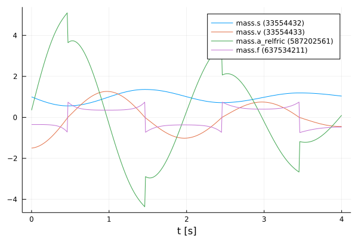
After the plots are created, the FMU is unloaded.
fmiUnload(realFMU)SimpleFMU
The following lines load and instantiate the simpleFMU.
simpleFMU = fmiLoad(simpleFMUPath)
fmiInstantiate!(simpleFMU; loggingOn=false)
fmiInfo(simpleFMU)┌ Info: fmi2Unzip(...): Successfully unzipped 28 files at `C:\Users\JOHANN~1\AppData\Local\Temp\fmijl_VQfCmt\SpringPendulum1D`.
└ @ FMI C:\Users\Johannes Stoljar\.julia\packages\FMI\l4qPg\src\FMI2.jl:273
#################### Begin information for FMU ####################
Model name: SpringPendulum1D
FMI-Version: 2.0
GUID: {5030e5a4-87c0-42cf-8779-74ebea1906aa}
Generation tool: Dymola Version 2020x (64-bit), 2019-10-10
Generation time: 2021-07-21T05:28:53Z
Var. naming conv.: structured
Event indicators: 0
Inputs: 0
Outputs: 0
States: 2
33554432 ["mass.s"]
33554433 ["mass.v"]
Supports Co-Simulation: true
Model identifier: SpringPendulum1D
Get/Set State: true
Serialize State: true
Dir. Derivatives: true
Var. com. steps: true
Input interpol.: true
Max order out. der.: 1
Supports Model-Exchange: true
Model identifier: SpringPendulum1D
Get/Set State: true
Serialize State: true
Dir. Derivatives: true
##################### End information for FMU #####################
┌ Info: fmi2Load(...): FMU supports both CS and ME, using CS as default if nothing specified.
└ @ FMI C:\Users\Johannes Stoljar\.julia\packages\FMI\l4qPg\src\FMI2.jl:376
┌ Info: fmi2Load(...): FMU resources location is `file:///C:/Users/JOHANN~1/AppData/Local/Temp/fmijl_VQfCmt/SpringPendulum1D/resources`
└ @ FMI C:\Users\Johannes Stoljar\.julia\packages\FMI\l4qPg\src\FMI2.jl:384The differences between both systems can be clearly seen from the plots in the subchapters. In the plot for the realFMU it can be seen that the oscillation continues to decrease due to the effect of the friction. If you would simulate long enough, the oscillation would come to a standstill in a certain time. The oscillation in the simpleFMU behaves differently, since the friction was not taken into account here. The oscillation in this model would continue to infinity with the same oscillation amplitude. From this observation the desire of an improvement of this model arises.
In the following two subsections, the simpleFMU is simulated twice with different initial states to show what effect the choice of initial states has.
Default initial states
Similar to the simulation of the realFMU, the simpleFMU is also simulated with the default values for the position and velocity of the mass and then plotted. There is one difference, however, as another state representing a fixed displacement is set. In addition, the last variable is also removed from the varibals to be plotted.
states = ["mass_s0", "mass_v0", "fixed.s0"]
displacement = 0.1
xSimple₀ = vcat(x₀, displacement)
vrs = vrs[1:end-1]
simpleSimData = simulate(simpleFMU, states, xSimple₀, vrs, tStart, tStop, tSave)
fmiPlot(simpleFMU, vrs, simpleSimData)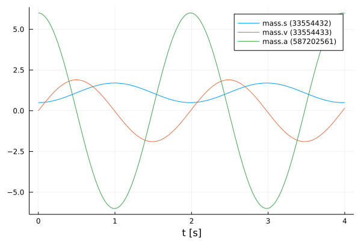
Modified initial states
The same values for the initial states are used for this simulation as for the simulation from the realFMU with the modified initial states.
xSimpleMod₀ = vcat(xMod₀, displacement)
simpleSimDataMod = simulate(simpleFMU, states, xSimpleMod₀, vrs, tStart, tStop, tSave)
fmiPlot(simpleFMU, vrs, simpleSimDataMod)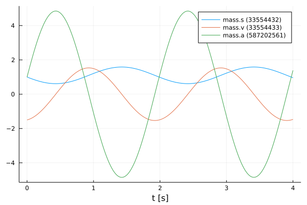
NeuralFMU
Loss function
In order to train our model, a loss function must be implemented. The solver of the NeuralFMU can calculate the gradient of the loss function. The gradient descent is needed to adjust the weights in the neural network so that the sum of the error is reduced and the model becomes more accurate.
The error function in this implementation consists of the mean of the mean squared erros. The first part of the addition is the deviation of the position and the second part is the deviation of the velocity. The mean squared error (mse) for the position consists from the real position of the realFMU simulation (posReal) and the position data of the network (posNet). The mean squared error for the velocity consists of the real velocity of the realFMU simualtion (velReal) and the velocity data of the network (velNet). $ loss = \frac{1}{2} \Bigl[ \frac{1}{n} \sum\limits{i=0}^n (posReal[i] - posNet[i])^2 + \frac{1}{n} \sum\limits{i=0}^n (velReal[i] - velNet[i])^2 \Bigr]$
# loss function for training
function lossSum()
global x₀
solution = neuralFMU(x₀)
posNet, velNet = extractPosVel(solution.u)
(Flux.Losses.mse(posReal, posNet) + Flux.Losses.mse(velReal, velNet)) / 2.0
endlossSum (generic function with 1 method)Callback
To output the loss in certain time intervals, a callback is implemented as a function in the following. Here a counter is incremented, every fiftieth pass the loss function is called and the average error is printed out. Also the parmaters for the velocity in the first layer are kept to a fixed value.
# callback function for training
global counter = 0
function callb()
global counter, paramsNet
counter += 1
# freeze first layer parameters (2,4,6) for velocity -> (static) direct feed trough for velocity
# parameters for position (1,3,5) are learned
paramsNet[1][2] = 0.0
paramsNet[1][4] = 1.0
paramsNet[1][6] = 0.0
if counter % 50 == 1
avgLoss = lossSum()
@info " Loss [$counter]: $(round(avgLoss, digits=5))
Avg displacement in data: $(round(sqrt(avgLoss), digits=5))
Weight/Scale: $(paramsNet[1][1]) Bias/Offset: $(paramsNet[1][5])"
end
endcallb (generic function with 1 method)Functions for plotting
In this section some important functions for plotting are defined. The function generate_figure() creates a new figure object and sets some attributes.
function generate_figure(title, xLabel, yLabel, xlim="auto")
Plots.plot(
title=title, xlabel=xLabel, ylabel=yLabel, linewidth=2,
xtickfontsize=12, ytickfontsize=12, xguidefontsize=12, yguidefontsize=12,
legendfontsize=12, legend=:topright, xlim=xlim)
endgenerate_figure (generic function with 2 methods)In the following function, the data of the realFMU, simpleFMU and neuralFMU are summarized and displayed in a graph.
function plot_results(title, xLabel, yLabel, interval, realData, simpleData, neuralData)
linestyles = [:dot, :solid]
fig = generate_figure(title, xLabel, yLabel)
Plots.plot!(fig, interval, simpleData, label="SimpleFMU", linewidth=2)
Plots.plot!(fig, interval, realData, label="reference", linewidth=2)
for i in 1:length(neuralData)
Plots.plot!(fig, neuralData[i][1], neuralData[i][2], label="NeuralFMU ($(i*2500))",
linewidth=2, linestyle=linestyles[i], linecolor=:green)
end
Plots.display(fig)
endplot_results (generic function with 1 method)This is the superordinate function, which at the beginning extracts the position and velocity from the simulation data (realSimData, realSimDataMod, simpleSimData,..., solutionAfterMod). Four graphs are then generated, each comparing the corresponding data from the realFMU, simpleFMU, and neuralFMU. The comparison is made with the simulation data from the simulation with the default and modified initial states. According to the data, the designation of the title and the naming of the axes is adapted.
function plot_all_results(realSimData, realSimDataMod, simpleSimData,
simpleSimDataMod, solutionAfter, solutionAfterMod)
# collect all data
posReal, velReal = extractPosVel(realSimData.saveval)
posRealMod, velRealMod = extractPosVel(realSimDataMod.saveval)
posSimple, velSimple = extractPosVel(simpleSimData.saveval)
posSimpleMod, velSimpleMod = extractPosVel(simpleSimDataMod.saveval)
run = length(solutionAfter)
posNeural, velNeural = [], []
posNeuralMod, velNeuralMod = [], []
for i in 1:run
dataNeural = extractPosVel(solutionAfter[i].u)
push!(posNeural, (solutionAfter[i].t, dataNeural[1]))
push!(velNeural, (solutionAfter[i].t, dataNeural[2]))
dataNeuralMod = extractPosVel(solutionAfterMod[i].u)
push!(posNeuralMod, (solutionAfterMod[i].t, dataNeuralMod[1]))
push!(velNeuralMod, (solutionAfterMod[i].t, dataNeuralMod[2]))
end
# plot results s (default initial states)
xLabel="t [s]"
yLabel="mass position [m]"
title = "Default: Mass position after Run: $(run)"
plot_results(title, xLabel, yLabel, tSave, posReal, posSimple, posNeural)
# plot results s (modified initial states)
title = "Modified: Mass position after Run: $(run)"
plot_results(title, xLabel, yLabel, tSave, posRealMod, posSimpleMod, posNeuralMod)
# plot results v (default initial states)
yLabel="mass velocity [m/s]"
title = "Default: Mass velocity after Run: $(run)"
plot_results(title, xLabel, yLabel, tSave, velReal, velSimple, velNeural)
# plot results v (modified initial states)
title = "Modified: Mass velocity after Run: $(run)"
plot_results(title, xLabel, yLabel, tSave, velRealMod, velSimpleMod, velNeuralMod)
endplot_all_results (generic function with 1 method)The function plot_friction_model() compares the friction model of the realFMU, simpleFMU and neuralFMU. For this, the velocity and force from the simulation data of the realFMU is needed. The force data is calculated with the extracted last layer of the neuralFMU to the real velocity in line 9 by iterating over the vector velReal. In the next rows, the velocity and force data (if available) for each of the three FMUs are combined into a matrix. The first row of the matrix corresponds to the later x-axis and here the velocity is plotted. The second row corresponds to the y-axis and here the force is plotted. This matrix is sorted and plotted by the first entries (velocity) with the function sortperm(). The graph with at least three graphs is plotted in line 33. As output this function has the forces of the neuralFMU.
function plot_friction_model(realSimData, netBottom, forces)
linestyles = [:dot, :solid]
velReal = collect(data[2] for data in realSimData.saveval)
forceReal = collect(data[4] for data in realSimData.saveval)
push!(forces, zeros(length(velReal)))
for i in 1:length(velReal)
forces[end][i] = -netBottom([velReal[i], 0.0])[2]
end
run = length(forces)
fig = generate_figure("Friction model $(run)", "v [m/s]", "friction force [N]", (-1.25, 1.25))
fricSimple = hcat(velReal, zeros(length(velReal)))
fricSimple[sortperm(fricSimple[:, 1]), :]
Plots.plot!(fig, fricSimple[:,1], fricSimple[:,2], label="SimpleFMU", linewidth=2)
fricReal = hcat(velReal, forceReal)
fricReal[sortperm(fricReal[:, 1]), :]
Plots.plot!(fig, fricReal[:,1], fricReal[:,2], label="reference", linewidth=2)
for i in 1:run
fricNeural = hcat(velReal, forces[i])
fricNeural[sortperm(fricNeural[:, 1]), :]
Plots.plot!(fig, fricNeural[:,1], fricNeural[:,2], label="NeuralFMU ($(i*2500))",
linewidth=2, linestyle=linestyles[i], linecolor=:green)
@info "Friction model $i mse: $(Flux.Losses.mse(fricNeural[:,2], fricReal[:,2]))"
end
flush(stderr)
Plots.display(fig)
return forces
endplot_friction_model (generic function with 1 method)The following function is used to display the different displacement modells of the realFMU, simpleFMU and neuralFMU. The displacement of the realFMU and simpleFMU is very trivial and is only a constant. The position data of the realFMU is needed to calculate the displacement. The displacement for the neuralFMU is calculated using the first extracted layer of the neural network, subtracting the real position and the displacement of the simpleFMU. Also in this function, the graphs of the three FMUs are compared in a plot.
function plot_displacement_model(realSimData, netTop, displacements, tSave, displacement)
linestyles = [:dot, :solid]
posReal = collect(data[1] for data in realSimData.saveval)
push!(displacements, zeros(length(posReal)))
for i in 1:length(posReal)
displacements[end][i] = netTop([posReal[i], 0.0])[1] - posReal[i] - displacement
end
run = length(displacements)
fig = generate_figure("Displacement model $(run)", "t [s]", "displacement [m]")
Plots.plot!(fig, [tSave[1], tSave[end]], [displacement, displacement], label="simpleFMU", linewidth=2)
Plots.plot!(fig, [tSave[1], tSave[end]], [0.0, 0.0], label="reference", linewidth=2)
for i in 1:run
Plots.plot!(fig, tSave, displacements[i], label="NeuralFMU ($(i*2500))",
linewidth=2, linestyle=linestyles[i], linecolor=:green)
end
Plots.display(fig)
return displacements
endplot_displacement_model (generic function with 1 method)Structure of the NeuralFMU
In the following, the topology of the NeuralFMU is constructed. It consists of a dense layer that has exactly as many inputs and outputs as the model has states numStates (and therefore state derivatives). It also sets the initial weights and offsets for the first dense layer, as well as the activation function, which consists of the identity. An input layer follows, which then leads into the simpleFMU model. The ME-FMU computes the state derivatives for a given system state. Following the simpleFMU is a dense layer that has numStates states. The output of this layer consists of 8 output nodes and a identity activation function. The next layer has 8 input and output nodes with a tanh activation function. The last layer is again a dense layer with 8 input nodes and the number of states as outputs. Here, it is important that no tanh-activation function follows, because otherwise the pendulums state values would be limited to the interval $[-1;1]$.
# NeuralFMU setup
numStates = fmiGetNumberOfStates(simpleFMU)
net = Chain(Dense(numStates, numStates, identity;
initW = (out, in) -> [[1.0, 0.0] [0.0, 1.0]],
initb = out -> zeros(out)),
inputs -> fmi2EvaluateME(simpleFMU, inputs),
Dense(numStates, 8, identity),
Dense(8, 8, tanh),
Dense(8, numStates))Chain(
Dense(2, 2), [90m# 6 parameters[39m
var"#17#20"(),
Dense(2, 8), [90m# 24 parameters[39m
Dense(8, 8, tanh), [90m# 72 parameters[39m
Dense(8, 2), [90m# 18 parameters[39m
)[90m # Total: 8 arrays, [39m120 parameters, 1016 bytes.Definition of the NeuralFMU
The instantiation of the ME-NeuralFMU is done as a one-liner. The FMU (simpleFMU), the structure of the network net, start tStart and end time tStop, the numerical solver Tsit5() and the time steps tSave for saving are specified.
neuralFMU = ME_NeuralFMU(simpleFMU, net, (tStart, tStop), Tsit5(); saveat=tSave);Plot before training
Here the state trajactory of the simpleFMU is recorded. Doesn't really look like a pendulum yet, but the system is random initialized by default. In the later plots, the effect of learning can be seen.
solutionBefore = neuralFMU(x₀)
fmiPlot(simpleFMU, solutionBefore)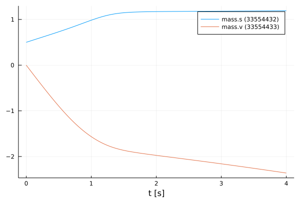
Training of the NeuralFMU
For the training of the NeuralFMU the parameters are extracted. All parameters of the first layer are set to the absolute value.
# train
paramsNet = Flux.params(neuralFMU)
for i in 1:length(paramsNet[1])
if paramsNet[1][i] < 0.0
paramsNet[1][i] = -paramsNet[1][i]
end
endThe well-known ADAM optimizer for minimizing the gradient descent is used as further passing parameters. Additionally, the previously defined loss and callback function as well as a one for the number of epochs are passed. Only one epoch is trained so that the NeuralFMU is precompiled.
optim = ADAM()
Flux.train!(lossSum, paramsNet, Iterators.repeated((), 1), optim; cb=callb) ┌ Info: Loss [1]: 0.42176
│ Avg displacement in data: 0.64943
│ Weight/Scale: 1.0009999999844448 Bias/Offset: 0.0009999999815963334
└ @ Main In[15]:15Some vectors for collecting data are initialized and the number of runs, epochs and iterations are set.
solutionAfter = []
solutionAfterMod = []
forces = []
displacements = []
numRuns = 2
numEpochs= 5
numIterations = 500;Training loop
The code section shown here represents the training loop. The loop is structured so that it has numRuns runs, where each run has numEpochs epochs, and the training is performed at each epoch with numIterations iterations. In lines 9 and 10, the data for the neuralFMU for the default and modified initial states are appended to the corresponding vectors. The plots for the opposition of position and velocity is done in line 13 by calling the function plot_all_results. In the following lines the last layers are extracted from the neuralFMU and formed into an independent network netBottom. The parmaters for the netBottom network come from the original architecture and are shared. In line 20, the new network is used to represent the friction model in a graph. An analogous construction of the next part of the training loop, where here the first layer is taken from the neuralFMU and converted to its own network netTop. This network is used to record the displacement model. The different graphs are generated for each run and can thus be compared.
for run in 1:numRuns
@time for epoch in 1:numEpochs
@info "Run: $(run)/$(numRuns) Epoch: $(epoch)/$(numEpochs)"
Flux.train!(lossSum, paramsNet, Iterators.repeated((), numIterations), optim; cb=callb)
end
flush(stderr)
flush(stdout)
push!(solutionAfter, neuralFMU(x₀))
push!(solutionAfterMod, neuralFMU(xMod₀))
# generate all plots for the position and velocity
plot_all_results(realSimData, realSimDataMod, simpleSimData, simpleSimDataMod, solutionAfter, solutionAfterMod)
# friction model extraction
layersBottom = neuralFMU.neuralODE.model.layers[3:5]
netBottom = Chain(layersBottom...)
transferParams!(netBottom, paramsNet, 7)
forces = plot_friction_model(realSimData, netBottom, forces)
# displacement model extraction
layersTop = neuralFMU.neuralODE.model.layers[1:1]
netTop = Chain(layersTop...)
transferParams!(netTop, paramsNet, 1)
displacements = plot_displacement_model(realSimData, netTop, displacements, tSave, displacement)
end┌ Info: Run: 1/2 Epoch: 1/5
└ @ Main In[27]:3
┌ Info: Loss [51]: 0.28565
│ Avg displacement in data: 0.53446
│ Weight/Scale: 1.0286111783896719 Bias/Offset: 0.02956336213052823
└ @ Main In[15]:15
┌ Info: Loss [101]: 0.27637
│ Avg displacement in data: 0.52571
│ Weight/Scale: 1.0227380319341028 Bias/Offset: 0.024779979783415926
└ @ Main In[15]:15
┌ Info: Loss [151]: 0.23802
│ Avg displacement in data: 0.48787
│ Weight/Scale: 1.0109595043163218 Bias/Offset: 0.017657584767572194
└ @ Main In[15]:15
┌ Info: Loss [201]: 0.11284
│ Avg displacement in data: 0.33591
│ Weight/Scale: 1.0187168091838543 Bias/Offset: 0.04967643587576684
└ @ Main In[15]:15
┌ Info: Loss [251]: 0.04202
│ Avg displacement in data: 0.20498
│ Weight/Scale: 1.0513631843151288 Bias/Offset: 0.08709946191489178
└ @ Main In[15]:15
┌ Info: Loss [301]: 0.03441
│ Avg displacement in data: 0.18549
│ Weight/Scale: 1.0521782955624404 Bias/Offset: 0.0833209946731039
└ @ Main In[15]:15
┌ Info: Loss [351]: 0.02889
│ Avg displacement in data: 0.16997
│ Weight/Scale: 1.0507789805347363 Bias/Offset: 0.07821369759961062
└ @ Main In[15]:15
┌ Info: Loss [401]: 0.0247
│ Avg displacement in data: 0.15715
│ Weight/Scale: 1.0489247270188242 Bias/Offset: 0.07403606623859026
└ @ Main In[15]:15
┌ Info: Loss [451]: 0.0214
│ Avg displacement in data: 0.14629
│ Weight/Scale: 1.0466033317763261 Bias/Offset: 0.07065149828990938
└ @ Main In[15]:15
┌ Info: Loss [501]: 0.01887
│ Avg displacement in data: 0.13738
│ Weight/Scale: 1.0438603361948664 Bias/Offset: 0.06787694206377189
└ @ Main In[15]:15
┌ Info: Run: 1/2 Epoch: 2/5
└ @ Main In[27]:3
┌ Info: Loss [551]: 0.01706
│ Avg displacement in data: 0.13061
│ Weight/Scale: 1.040893662600301 Bias/Offset: 0.06575502539158813
└ @ Main In[15]:15
┌ Info: Loss [601]: 0.01562
│ Avg displacement in data: 0.12498
│ Weight/Scale: 1.0380266250358758 Bias/Offset: 0.06428430875434155
└ @ Main In[15]:15
┌ Info: Loss [651]: 0.01439
│ Avg displacement in data: 0.11995
│ Weight/Scale: 1.0351399591310342 Bias/Offset: 0.06312510899266015
└ @ Main In[15]:15
┌ Info: Loss [701]: 0.01332
│ Avg displacement in data: 0.11542
│ Weight/Scale: 1.032320441439091 Bias/Offset: 0.062197166818365436
└ @ Main In[15]:15
┌ Info: Loss [751]: 0.01234
│ Avg displacement in data: 0.1111
│ Weight/Scale: 1.029645335632183 Bias/Offset: 0.06143114604889372
└ @ Main In[15]:15
┌ Info: Loss [801]: 0.01144
│ Avg displacement in data: 0.10697
│ Weight/Scale: 1.027236022857356 Bias/Offset: 0.06085332930418252
└ @ Main In[15]:15
┌ Info: Loss [851]: 0.01064
│ Avg displacement in data: 0.10313
│ Weight/Scale: 1.0251223753196803 Bias/Offset: 0.06044785999331985
└ @ Main In[15]:15
┌ Info: Loss [901]: 0.0099
│ Avg displacement in data: 0.09951
│ Weight/Scale: 1.023315362695265 Bias/Offset: 0.06024866642970074
└ @ Main In[15]:15
┌ Info: Loss [951]: 0.00922
│ Avg displacement in data: 0.09602
│ Weight/Scale: 1.0217680458848062 Bias/Offset: 0.06023526171860316
└ @ Main In[15]:15
┌ Info: Loss [1001]: 0.00858
│ Avg displacement in data: 0.09265
│ Weight/Scale: 1.020440934786138 Bias/Offset: 0.06039598811238556
└ @ Main In[15]:15
┌ Info: Run: 1/2 Epoch: 3/5
└ @ Main In[27]:3
┌ Info: Loss [1051]: 0.00796
│ Avg displacement in data: 0.0892
│ Weight/Scale: 1.019234221745652 Bias/Offset: 0.06063012165772161
└ @ Main In[15]:15
┌ Info: Loss [1101]: 0.00733
│ Avg displacement in data: 0.08563
│ Weight/Scale: 1.0180596810795992 Bias/Offset: 0.06083635634563215
└ @ Main In[15]:15
┌ Info: Loss [1151]: 0.00672
│ Avg displacement in data: 0.08195
│ Weight/Scale: 1.0169472276860123 Bias/Offset: 0.061046194352924965
└ @ Main In[15]:15
┌ Info: Loss [1201]: 0.00612
│ Avg displacement in data: 0.0782
│ Weight/Scale: 1.0159093038209581 Bias/Offset: 0.061218072186984086
└ @ Main In[15]:15
┌ Info: Loss [1251]: 0.00556
│ Avg displacement in data: 0.07456
│ Weight/Scale: 1.014996461256444 Bias/Offset: 0.061342041802755105
└ @ Main In[15]:15
┌ Info: Loss [1301]: 0.00504
│ Avg displacement in data: 0.07099
│ Weight/Scale: 1.014237800262788 Bias/Offset: 0.0613774404803237
└ @ Main In[15]:15
┌ Info: Loss [1351]: 0.00462
│ Avg displacement in data: 0.06797
│ Weight/Scale: 1.0137294101233838 Bias/Offset: 0.06146807431241549
└ @ Main In[15]:15
┌ Info: Loss [1401]: 0.00428
│ Avg displacement in data: 0.06539
│ Weight/Scale: 1.0134108488171056 Bias/Offset: 0.06159381154669232
└ @ Main In[15]:15
┌ Info: Loss [1451]: 0.00399
│ Avg displacement in data: 0.06318
│ Weight/Scale: 1.0132445181483052 Bias/Offset: 0.06178230970201576
└ @ Main In[15]:15
┌ Info: Loss [1501]: 0.00375
│ Avg displacement in data: 0.06122
│ Weight/Scale: 1.0131776018405887 Bias/Offset: 0.062025043165095266
└ @ Main In[15]:15
┌ Info: Run: 1/2 Epoch: 4/5
└ @ Main In[27]:3
┌ Info: Loss [1551]: 0.00354
│ Avg displacement in data: 0.05947
│ Weight/Scale: 1.0131710033335706 Bias/Offset: 0.062306134823292655
└ @ Main In[15]:15
┌ Info: Loss [1601]: 0.00335
│ Avg displacement in data: 0.05786
│ Weight/Scale: 1.0132024755679327 Bias/Offset: 0.06261319064256955
└ @ Main In[15]:15
┌ Info: Loss [1651]: 0.00318
│ Avg displacement in data: 0.05638
│ Weight/Scale: 1.013260685107001 Bias/Offset: 0.06293832944092709
└ @ Main In[15]:15
┌ Info: Loss [1701]: 0.00303
│ Avg displacement in data: 0.05502
│ Weight/Scale: 1.0133396705608375 Bias/Offset: 0.06327652852868175
└ @ Main In[15]:15
┌ Info: Loss [1751]: 0.00289
│ Avg displacement in data: 0.05375
│ Weight/Scale: 1.0134358522567677 Bias/Offset: 0.0636243484149065
└ @ Main In[15]:15
┌ Info: Loss [1801]: 0.00276
│ Avg displacement in data: 0.05258
│ Weight/Scale: 1.0135467571177528 Bias/Offset: 0.06397929890444008
└ @ Main In[15]:15
┌ Info: Loss [1851]: 0.00265
│ Avg displacement in data: 0.05149
│ Weight/Scale: 1.013670516900537 Bias/Offset: 0.06433952955751007
└ @ Main In[15]:15
┌ Info: Loss [1901]: 0.00255
│ Avg displacement in data: 0.05046
│ Weight/Scale: 1.0138056596433167 Bias/Offset: 0.0647036516197806
└ @ Main In[15]:15
┌ Info: Loss [1951]: 0.00245
│ Avg displacement in data: 0.04951
│ Weight/Scale: 1.0139510057836334 Bias/Offset: 0.06507062834118049
└ @ Main In[15]:15
┌ Info: Loss [2001]: 0.00236
│ Avg displacement in data: 0.04861
│ Weight/Scale: 1.0141055915661854 Bias/Offset: 0.06543967970994506
└ @ Main In[15]:15
┌ Info: Run: 1/2 Epoch: 5/5
└ @ Main In[27]:3
┌ Info: Loss [2051]: 0.00228
│ Avg displacement in data: 0.04776
│ Weight/Scale: 1.0142686074193126 Bias/Offset: 0.06581023672978648
└ @ Main In[15]:15
┌ Info: Loss [2101]: 0.00221
│ Avg displacement in data: 0.04698
│ Weight/Scale: 1.014447820077644 Bias/Offset: 0.06619614472538896
└ @ Main In[15]:15
┌ Info: Loss [2151]: 0.00214
│ Avg displacement in data: 0.04622
│ Weight/Scale: 1.0146195124031292 Bias/Offset: 0.06656358400019907
└ @ Main In[15]:15
┌ Info: Loss [2201]: 0.00207
│ Avg displacement in data: 0.0455
│ Weight/Scale: 1.0148042412420994 Bias/Offset: 0.06693688337331748
└ @ Main In[15]:15
┌ Info: Loss [2251]: 0.00201
│ Avg displacement in data: 0.04482
│ Weight/Scale: 1.0149946664984544 Bias/Offset: 0.06730950022717663
└ @ Main In[15]:15
┌ Info: Loss [2301]: 0.00195
│ Avg displacement in data: 0.04417
│ Weight/Scale: 1.0151905860411778 Bias/Offset: 0.06768173855181797
└ @ Main In[15]:15
┌ Info: Loss [2351]: 0.0019
│ Avg displacement in data: 0.04355
│ Weight/Scale: 1.0153912809305963 Bias/Offset: 0.06805325518281151
└ @ Main In[15]:15
┌ Info: Loss [2401]: 0.00185
│ Avg displacement in data: 0.04297
│ Weight/Scale: 1.0155961224151784 Bias/Offset: 0.06842376493363168
└ @ Main In[15]:15
┌ Info: Loss [2451]: 0.0018
│ Avg displacement in data: 0.04241
│ Weight/Scale: 1.0158045051687399 Bias/Offset: 0.06879297485736173
└ @ Main In[15]:15
┌ Info: Loss [2501]: 0.00175
│ Avg displacement in data: 0.04188
│ Weight/Scale: 1.0160158385445512 Bias/Offset: 0.0691605750753205
└ @ Main In[15]:15
3164.063564 seconds (7.76 G allocations: 476.333 GiB, 4.15% gc time)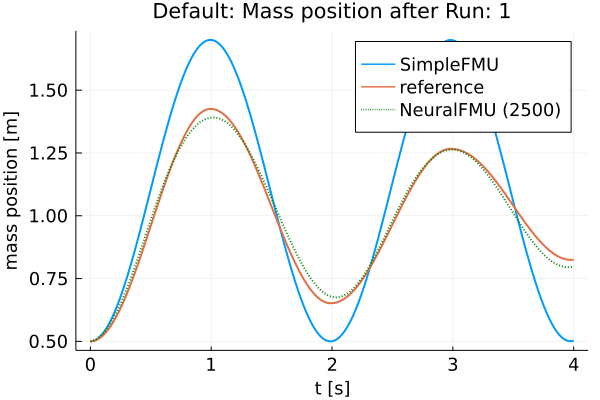
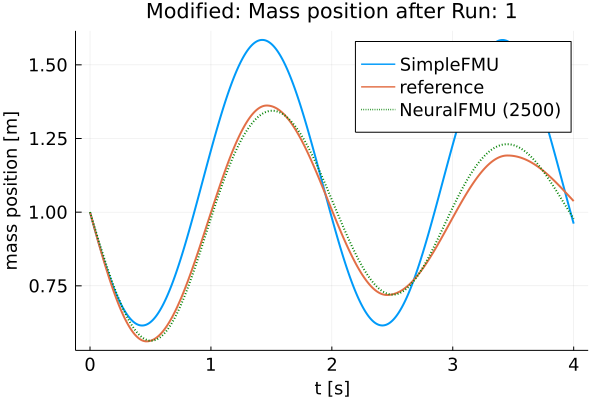
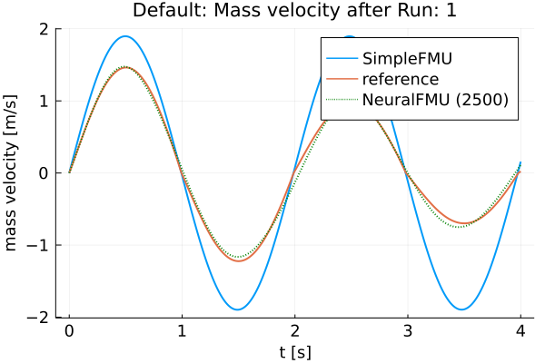
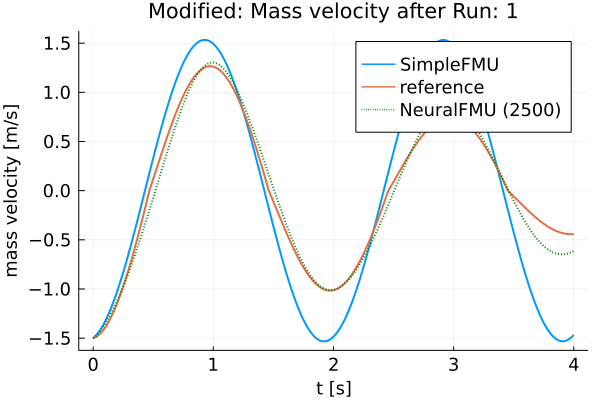
┌ Info: Friction model 1 mse: 0.7541038092408717
└ @ Main In[19]:29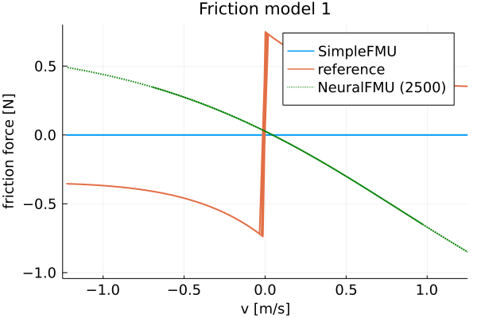
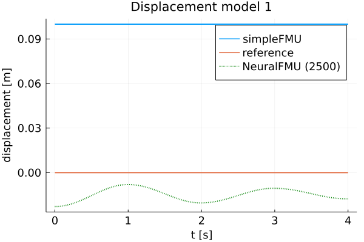
┌ Info: Run: 2/2 Epoch: 1/5
└ @ Main In[27]:3
┌ Info: Loss [2551]: 0.00171
│ Avg displacement in data: 0.04137
│ Weight/Scale: 1.016229548801126 Bias/Offset: 0.06952624500869685
└ @ Main In[15]:15
┌ Info: Loss [2601]: 0.00167
│ Avg displacement in data: 0.04088
│ Weight/Scale: 1.0164450811761696 Bias/Offset: 0.06988965411129339
└ @ Main In[15]:15
┌ Info: Loss [2651]: 0.00163
│ Avg displacement in data: 0.04042
│ Weight/Scale: 1.0166619044860516 Bias/Offset: 0.07025046670690757
└ @ Main In[15]:15
┌ Info: Loss [2701]: 0.0016
│ Avg displacement in data: 0.03998
│ Weight/Scale: 1.0168795146203686 Bias/Offset: 0.07060834433025422
└ @ Main In[15]:15
┌ Info: Loss [2751]: 0.00156
│ Avg displacement in data: 0.03955
│ Weight/Scale: 1.0170974387940153 Bias/Offset: 0.07096295141121652
└ @ Main In[15]:15
┌ Info: Loss [2801]: 0.00153
│ Avg displacement in data: 0.03915
│ Weight/Scale: 1.0173152335687383 Bias/Offset: 0.07131395463827797
└ @ Main In[15]:15
┌ Info: Loss [2851]: 0.00151
│ Avg displacement in data: 0.03881
│ Weight/Scale: 1.0175129332462627 Bias/Offset: 0.07166247578110631
└ @ Main In[15]:15
┌ Info: Loss [2901]: 0.00147
│ Avg displacement in data: 0.0384
│ Weight/Scale: 1.0176737837896552 Bias/Offset: 0.07198377152194411
└ @ Main In[15]:15
┌ Info: Loss [2951]: 0.00145
│ Avg displacement in data: 0.03805
│ Weight/Scale: 1.0178463348529252 Bias/Offset: 0.0722931481446665
└ @ Main In[15]:15
┌ Info: Loss [3001]: 0.00142
│ Avg displacement in data: 0.03771
│ Weight/Scale: 1.0180181098515222 Bias/Offset: 0.07259755977316348
└ @ Main In[15]:15
┌ Info: Run: 2/2 Epoch: 2/5
└ @ Main In[27]:3
┌ Info: Loss [3051]: 0.0014
│ Avg displacement in data: 0.03738
│ Weight/Scale: 1.0181885812904008 Bias/Offset: 0.07289715852819231
└ @ Main In[15]:15
┌ Info: Loss [3101]: 0.00137
│ Avg displacement in data: 0.03707
│ Weight/Scale: 1.018357766645548 Bias/Offset: 0.07319177404784898
└ @ Main In[15]:15
┌ Info: Loss [3151]: 0.00135
│ Avg displacement in data: 0.03677
│ Weight/Scale: 1.0185255265576187 Bias/Offset: 0.07348121013093241
└ @ Main In[15]:15
┌ Info: Loss [3201]: 0.00134
│ Avg displacement in data: 0.03664
│ Weight/Scale: 1.0186384410864069 Bias/Offset: 0.07375546910282832
└ @ Main In[15]:15
┌ Info: Loss [3251]: 0.00131
│ Avg displacement in data: 0.0362
│ Weight/Scale: 1.0187702803549026 Bias/Offset: 0.0740192177800107
└ @ Main In[15]:15
┌ Info: Loss [3301]: 0.00129
│ Avg displacement in data: 0.03593
│ Weight/Scale: 1.0188989023698134 Bias/Offset: 0.07426758729816377
└ @ Main In[15]:15
┌ Info: Loss [3351]: 0.00127
│ Avg displacement in data: 0.03567
│ Weight/Scale: 1.0190236614619597 Bias/Offset: 0.07450872117620551
└ @ Main In[15]:15
┌ Info: Loss [3401]: 0.00125
│ Avg displacement in data: 0.03542
│ Weight/Scale: 1.0191465831768112 Bias/Offset: 0.07474436265438232
└ @ Main In[15]:15
┌ Info: Loss [3451]: 0.00124
│ Avg displacement in data: 0.03517
│ Weight/Scale: 1.0192677355297068 Bias/Offset: 0.0749743867108784
└ @ Main In[15]:15
┌ Info: Loss [3501]: 0.00122
│ Avg displacement in data: 0.03495
│ Weight/Scale: 1.0193812473692951 Bias/Offset: 0.07519395643987335
└ @ Main In[15]:15
┌ Info: Run: 2/2 Epoch: 3/5
└ @ Main In[27]:3
┌ Info: Loss [3551]: 0.00121
│ Avg displacement in data: 0.03472
│ Weight/Scale: 1.019422564973201 Bias/Offset: 0.07539694229469925
└ @ Main In[15]:15
┌ Info: Loss [3601]: 0.00119
│ Avg displacement in data: 0.03447
│ Weight/Scale: 1.0195160436668147 Bias/Offset: 0.07559780044664313
└ @ Main In[15]:15
┌ Info: Loss [3651]: 0.00117
│ Avg displacement in data: 0.03426
│ Weight/Scale: 1.0195969683940844 Bias/Offset: 0.07577955787811985
└ @ Main In[15]:15
┌ Info: Loss [3701]: 0.00116
│ Avg displacement in data: 0.03404
│ Weight/Scale: 1.0196760008625247 Bias/Offset: 0.07595622675555126
└ @ Main In[15]:15
┌ Info: Loss [3751]: 0.00114
│ Avg displacement in data: 0.03383
│ Weight/Scale: 1.0197531837969303 Bias/Offset: 0.07612745575775592
└ @ Main In[15]:15
┌ Info: Loss [3801]: 0.00113
│ Avg displacement in data: 0.03362
│ Weight/Scale: 1.019828629356617 Bias/Offset: 0.07629319358816561
└ @ Main In[15]:15
┌ Info: Loss [3851]: 0.00116
│ Avg displacement in data: 0.03401
│ Weight/Scale: 1.019816626062623 Bias/Offset: 0.07640549578331124
└ @ Main In[15]:15
┌ Info: Loss [3901]: 0.0011
│ Avg displacement in data: 0.03323
│ Weight/Scale: 1.0198752279345842 Bias/Offset: 0.07658674166120087
└ @ Main In[15]:15
┌ Info: Loss [3951]: 0.00109
│ Avg displacement in data: 0.03304
│ Weight/Scale: 1.0199207839653588 Bias/Offset: 0.0767172503081904
└ @ Main In[15]:15
┌ Info: Loss [4001]: 0.00108
│ Avg displacement in data: 0.03285
│ Weight/Scale: 1.0199597058433785 Bias/Offset: 0.07683851508060009
└ @ Main In[15]:15
┌ Info: Run: 2/2 Epoch: 4/5
└ @ Main In[27]:3
┌ Info: Loss [4051]: 0.00107
│ Avg displacement in data: 0.03266
│ Weight/Scale: 1.0199968911982995 Bias/Offset: 0.07695517518994958
└ @ Main In[15]:15
┌ Info: Loss [4101]: 0.00105
│ Avg displacement in data: 0.03248
│ Weight/Scale: 1.020032467149272 Bias/Offset: 0.07706709946127448
└ @ Main In[15]:15
┌ Info: Loss [4151]: 0.00104
│ Avg displacement in data: 0.0323
│ Weight/Scale: 1.0200654616983746 Bias/Offset: 0.07717347536342965
└ @ Main In[15]:15
┌ Info: Loss [4201]: 0.00103
│ Avg displacement in data: 0.03214
│ Weight/Scale: 1.020010641353738 Bias/Offset: 0.0772656517477099
└ @ Main In[15]:15
┌ Info: Loss [4251]: 0.00102
│ Avg displacement in data: 0.03195
│ Weight/Scale: 1.0200099098377153 Bias/Offset: 0.07734909864140466
└ @ Main In[15]:15
┌ Info: Loss [4301]: 0.00101
│ Avg displacement in data: 0.03178
│ Weight/Scale: 1.0200111463586086 Bias/Offset: 0.07741977155652452
└ @ Main In[15]:15
┌ Info: Loss [4351]: 0.001
│ Avg displacement in data: 0.03161
│ Weight/Scale: 1.0200114085786474 Bias/Offset: 0.07748793490454804
└ @ Main In[15]:15
┌ Info: Loss [4401]: 0.00099
│ Avg displacement in data: 0.03144
│ Weight/Scale: 1.0200100185809562 Bias/Offset: 0.0775524808439198
└ @ Main In[15]:15
┌ Info: Loss [4451]: 0.00098
│ Avg displacement in data: 0.03127
│ Weight/Scale: 1.0200070281665077 Bias/Offset: 0.07761338094958463
└ @ Main In[15]:15
┌ Info: Loss [4501]: 0.00102
│ Avg displacement in data: 0.03201
│ Weight/Scale: 1.0199471604345323 Bias/Offset: 0.07762620102212063
└ @ Main In[15]:15
┌ Info: Run: 2/2 Epoch: 5/5
└ @ Main In[27]:3
┌ Info: Loss [4551]: 0.00096
│ Avg displacement in data: 0.03095
│ Weight/Scale: 1.0198657900275487 Bias/Offset: 0.07769937232889036
└ @ Main In[15]:15
┌ Info: Loss [4601]: 0.00095
│ Avg displacement in data: 0.03079
│ Weight/Scale: 1.019842886879103 Bias/Offset: 0.07774192990756451
└ @ Main In[15]:15
┌ Info: Loss [4651]: 0.00094
│ Avg displacement in data: 0.03063
│ Weight/Scale: 1.019808929671946 Bias/Offset: 0.0777690163720817
└ @ Main In[15]:15
┌ Info: Loss [4701]: 0.00093
│ Avg displacement in data: 0.03047
│ Weight/Scale: 1.0197720180347962 Bias/Offset: 0.0777931244870986
└ @ Main In[15]:15
┌ Info: Loss [4751]: 0.00092
│ Avg displacement in data: 0.03031
│ Weight/Scale: 1.0197330579203314 Bias/Offset: 0.07781469421503724
└ @ Main In[15]:15
┌ Info: Loss [4801]: 0.00091
│ Avg displacement in data: 0.03015
│ Weight/Scale: 1.0196920696171694 Bias/Offset: 0.07783379376725892
└ @ Main In[15]:15
┌ Info: Loss [4851]: 0.00094
│ Avg displacement in data: 0.03062
│ Weight/Scale: 1.0196964319427353 Bias/Offset: 0.07789033139683764
└ @ Main In[15]:15
┌ Info: Loss [4901]: 0.00089
│ Avg displacement in data: 0.02985
│ Weight/Scale: 1.0194643521872544 Bias/Offset: 0.07784603468403976
└ @ Main In[15]:15
┌ Info: Loss [4951]: 0.00088
│ Avg displacement in data: 0.02969
│ Weight/Scale: 1.0193938823333755 Bias/Offset: 0.07784323586407052
└ @ Main In[15]:15
┌ Info: Loss [5001]: 0.00087
│ Avg displacement in data: 0.02953
│ Weight/Scale: 1.0193205792837756 Bias/Offset: 0.07783135347576647
└ @ Main In[15]:15
3141.788865 seconds (7.75 G allocations: 476.097 GiB, 4.18% gc time)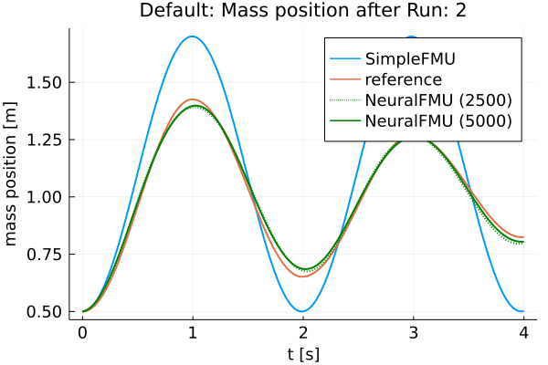
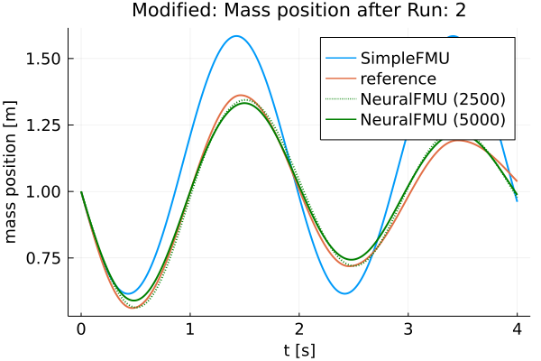
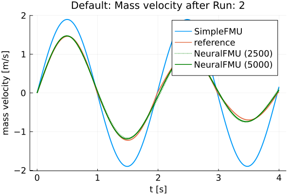
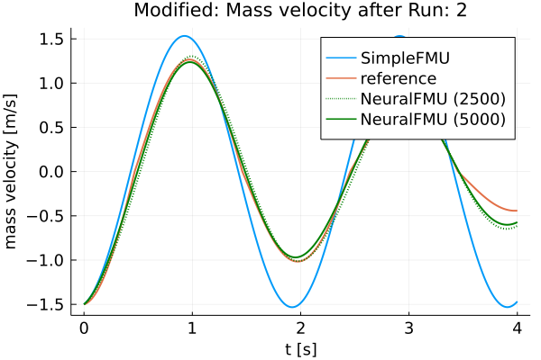
┌ Info: Friction model 1 mse: 0.7541038092408717
└ @ Main In[19]:29
┌ Info: Friction model 2 mse: 0.7459716547805014
└ @ Main In[19]:29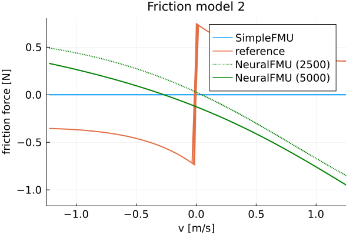
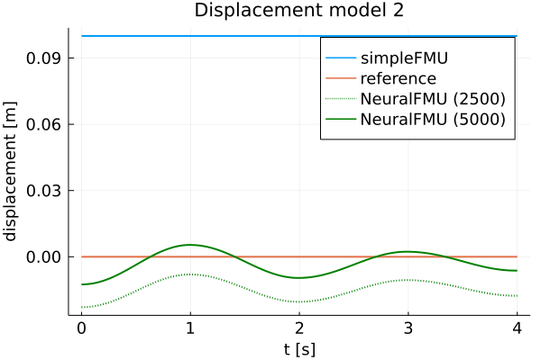
Finally, the FMU is cleaned-up.
fmiUnload(simpleFMU)Summar
Based on the plots, it can be seen that the curves of the realFMU and the neuralFMU are very close. The neuralFMU is able to learn the friction and displacement model.
Source
[1] Tobias Thummerer, Lars Mikelsons and Josef Kircher. 2021. NeuralFMU: towards structural integration of FMUs into neural networks. Martin Sjölund, Lena Buffoni, Adrian Pop and Lennart Ochel (Ed.). Proceedings of 14th Modelica Conference 2021, Linköping, Sweden, September 20-24, 2021. Linköping University Electronic Press, Linköping (Linköping Electronic Conference Proceedings ; 181), 297-306. DOI: 10.3384/ecp21181297